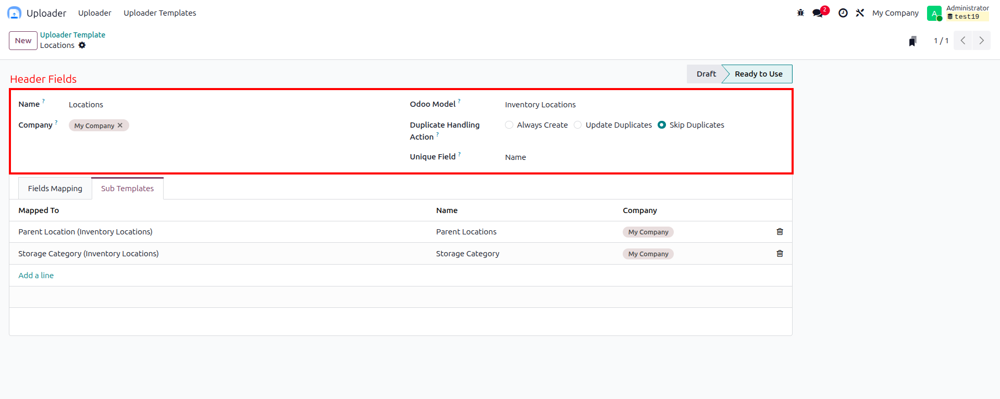
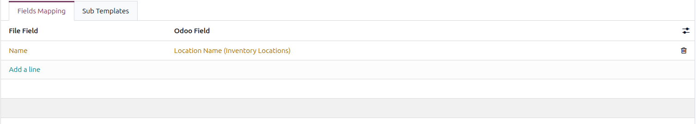
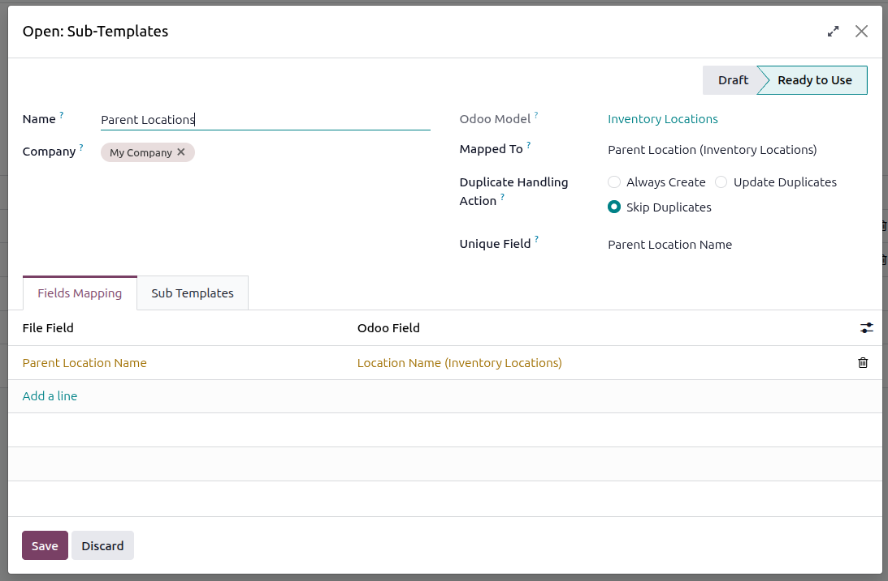
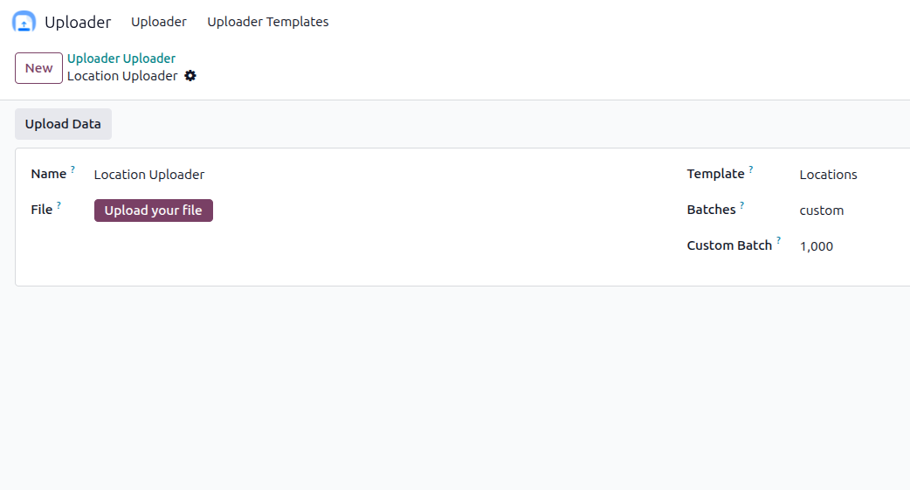

I specialize in advanced Odoo modules, data migration tools, performance optimization, and enterprise-grade custom solutions.
Uploader is a comprehensive data import solution designed specifically for Odoo environments. It eliminates the complexity of manual data entry by providing a sophisticated yet intuitive framework for uploading Excel and CSV files with configurable templates, intelligent field mappings, and advanced duplicate-handling strategies.
Automate data imports that would take hours manually into minutes
Validate data before import with smart field detection and type checking
Create once, use forever across multiple import operations
Everything you need for seamless data migration and import operations
Create intelligent mappings between your Excel/CSV columns and Odoo model fields.
Choose from three strategies: Skip (ignore duplicates), Always Create (allow duplicates), or Update Existing (modify current records). Define unique identifier fields to detect duplicates accurately based on your business logic.
Import complex relational data effortlessly. Sub-templates handle related records automatically by searching existing entries or creating new ones. Perfect for importing products with categories, contacts with companies, or any hierarchical data structure.
Handle large datasets efficiently with configurable batch sizes (10, 50, 100, or custom). Prevents server timeouts, reduces memory usage, and provides progress tracking. Import thousands of records without compromising system performance.
Understanding the building blocks of Uploader
The foundation of your import configuration. Each template is a reusable blueprint that defines how data should be imported into a specific Odoo model.
Template Components:
The bridge between your source data and Odoo fields. Each mapping translates a column from your file into structured database information.
Mapping Features:
Learn how to configure templates and prepare your data for import
The first step in using the module is to create a Template. A template defines how Excel or CSV data will be mapped and imported into Odoo records.
When creating a new template, the form is divided into two main sections:
Name
The name of the template. It should clearly describe the purpose of the import (e.g., Customer Import, Product Update Template).
Company
Specifies the company for which this template is applicable. Useful in multi-company environments.
Odoo Model
Select the Odoo model for which this template is created
(e.g., res.partner, product.template).
This determines which fields are available for mapping.
Duplicate Handling Action
Unique Field
Field used to identify existing records (e.g., Email, Internal Reference). This field is used during duplicate detection.
📸 Screenshot: Template form showing header fields

Important:
Newly created templates are set to Draft by default. To use a template for importing data, you must change its state to Ready to Use.
This applies to both parent templates and all associated sub-templates.
The template form includes a Notebook with two pages:
This tab defines how Excel columns map to Odoo fields. Each row represents a single column-to-field mapping.
📸 Screenshot: Fields Mapping tab with sample mappings

Sub Templates are used to handle relational data during the import process.
When adding a sub-template, an additional field called Mapped To Field is available. This field links the sub-template to a many2one field of the parent model.
Once selected, the sub-template model is automatically determined, reducing configuration errors and ensuring data consistency.
📸 Screenshot: Sub Template creation with Mapped To Field highlighted

After configuring and activating the template, the next step is to create an Uploader. The uploader is responsible for processing the Excel file and importing data into Odoo based on the selected template configuration.
To begin, create a new uploader record. The uploader form contains the following fields:
Name
The name of the uploader. It should clearly describe the import operation (e.g., Customer Import – January, Product Update Batch 1).
Template
Select a template that is in the Ready to Use state. The uploader uses this template to determine field mappings, duplicate handling rules, and sub-template behavior.
Batches
Defines how many records are processed per batch during the import. This helps manage performance and large datasets.
Custom Batch
This field becomes available only when Custom is selected in the Batches field. Enter the desired number of records to be processed per batch.
File
Upload the Excel file containing the data to be imported. The column names in the file must exactly match the File Field values defined in the template’s field mappings.
📸 Screenshot: Uploader form with all fields filled

Once all required fields are completed and the file is uploaded, verify the following:
Click the Upload File button to start the import process.
What happens next?
After clicking Upload File, the system processes the data according to:
Handle complex relational data structures with nested sub-templates
Uploader's sub-template system enables sophisticated relational imports without manual record creation. When importing data with Many2one relationships (like Products with Categories, or Contacts with Companies), sub-templates automatically handle the related records.
Define Related Model Template
Create a separate template for the related model (e.g., Product Category template for importing products)
Link via Mapped To Field
Connect
the sub-template to a
Many2one field in the parent template using the mapped_to
parameter
Automatic Search or Create
The system searches for existing related records based on sub-template unique fields. If not found, creates new records automatically and links them to the parent
💡 Real-World Example:
Importing 1000 products with categories: Instead of manually creating
categories first,
define a Product Category sub-template linked to the product's categ_id
field.
The system will automatically find existing categories or create new
ones during the product
import, ensuring data consistency and saving hours of manual work.